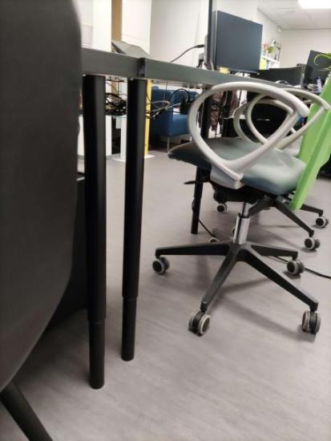
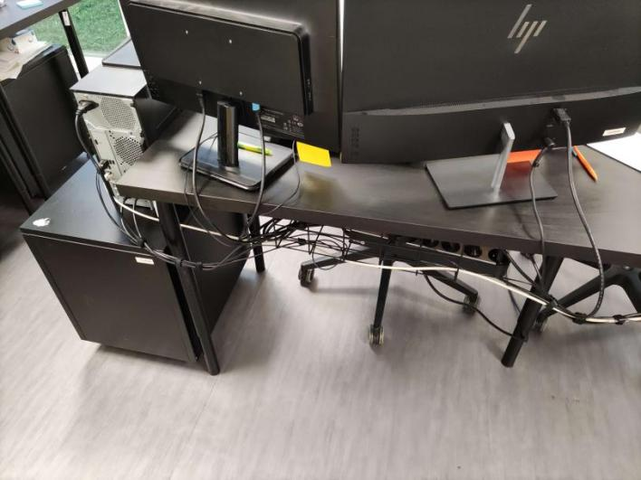
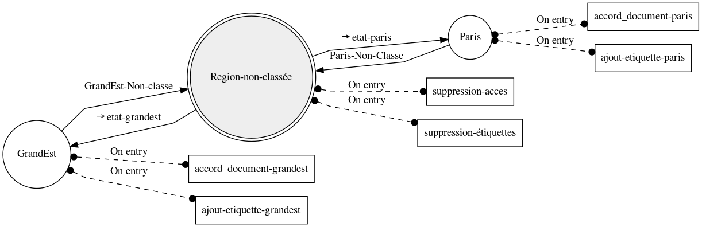
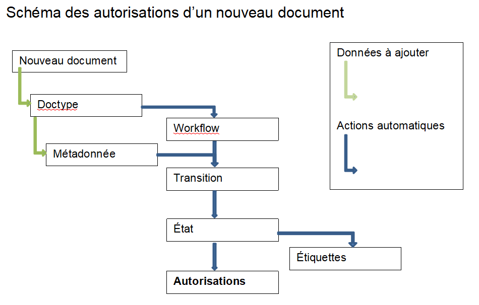

My journey and me
My name is Mathéo Fritschy and I'm currently a student in my first
year of a "BUT Réseaux et Télécommunications" at the university of
Colmar. On this page, I'm going to tell you about my curent career and
over the next few years.
In 2016, I started high school at Champagnat Issenheim, where I
obtained my brevet with honors in 2020. I then joined the Lycée
Professionnel Saint Jean in Colmar for a BAC Professionnel Systèmes
Numériques with a Network option. I really enjoyed the course,
especially the practical work on networks and server and workstation
installation. I also got to see a bit of Linux with Raspberry Pi for
example. Right now, I am in Colmar for the Networks and
Telecommunications BUT, as the course is a continuation of what I was
able to do in practical work at Saint Jean, and I'm enjoying it so
far.
My professional experience
During my BAC Pro training, I had the opportunity to do several
internships, which formed a large part of my work experience. I was
also able to work with my father during the summer vacations in air
conditioning maintenance.
-
2020 :
- "Stage de troisième" SAV Climatisations (1 week)
-
2021 :
- Summer job SAV Climatisations
- Internship SAV Climatisations (1 month)
- Internship NEWTEC Bag (2 weeks)
- Internship Facil'ordi (1 week)
-
2022 :
- Summer job SAV Climatisations
- Internship ABC Réseau (1 month)
- Holidays job SAV Climatisations (1 week)
- Internship ABC Réseau (1 month)
-
2023 :
- Summer job SAV Climatisations
- Internship Agence Cactus (1 month)
- Internship ABC Réseau (1 month)
My internships projects
So I've been able to acquire a lot of knowledge during my various
internships and training courses. I've learned how to be rigorous at
work, and how to behave in a company and with customers. On a
technical level, although this isn't my field, I do have some
knowledge of air conditioning operation and repair. During my
internships, I was able to install a lot of Windows workstations and a
few Linux ones. I've also had some interesting projects:
-
Wifi repeater configuration and installation (ABC Réseau)
During this project, my internship supervisor and I took
measurements of a warehouse's wifi network with a view to
installing a repeater. Here's a diagram of the results obtained:
We then configured a Mikrotik hAP ac² router to map the company's
2.4 and 5GHz network. Here's the configuration:
DHCP Client on Bridge, disable DHCP Server, no firewall changes
required, disable www, telnet and ftp for network security. Also
disable the Bridge's eth2 interface.
With this configuration, by setting the SSID and password of the
cap AC router already present in the company, all you had to do
was plug the router into the network and power it up, and it would
connect itself and relay the 2.4 and 5GHz signals.
Here's the result after setting up the access point:
-
Automated and customized Windows installation (ABC Réseau)
I carried out this project almost autonomously over a two-week
period, while doing other tasks at the same time. So I'm going to
explain here how to create an automatic Windows installation USB
key with a clean OS.
To do this, I first needed to make a clean Windows ISO, which I
modified with DISM++, a graphical interface to DISM, a tool for
managing Windows images. Once the ISO was ready, I needed to
automate the installation, by adding an XML file that can be
generated on certain sites such as "windowsafg" for my part. The
resulting file was to be placed at the root of the bootable key
created with Rufus.
I've seen that you can automatically install software directly
after installing the operating system. So you need to have
executable software files and call them up in a batch script,
which has itself been launched in the XML file you've inserted in
the root. With the following line:

And here's the Batch script:

So, when you launch Windows installation with this bootable key,
the answer file responds to installation questions on its own and
launches the software installers.
-
Cable management of part of an open space (Agence Cactus)
At the "AgenceCactus", I was able to reorganize the layout of the
open-plan offices and arrange the cables. When I arrived, the
cables weren't tidy, some were lying on the floor and chairs were
rolling over them. So I was given the task of tidying them up. I
was able to order and install my own cable brackets to fix under
the desk, as well as cable ties.
Here are the desks after my installation:


The people working in the open space were happy with the work I'd
done.
-
Configuration d'une GED (ABC Réseau)
For my last internship at ABC Réseau, I had the opportunity to
configure an
Electronic Document Management (EDM) installed in
a Docker on a Proxmox server. The aim was to set up a document
manager for a company with different sales reps for different
regions. Each sales rep was to have access only to the documents
for his or her region. To achieve this, the company planned to
work on the Mayan EDMS.
To answer the problem, we first had to understand how Mayan
worked, and find out which functionalities would enable us to do
what we wanted. We started by looking at document types, but these
are used first and foremost to distinguish invoices from plans,
for example. Next, we tried to set permissions on indexes, but
although the user could no longer see the documents, they still
had access to them.
The features I ended up using were metadata to distinguish
regions, workflows for permissions, and roles, groups and users. A
workflow consists in setting a state for a document by means of
transitions. Permissions can be associated with each state, and
transitions can be triggered by metadata.


Each region has a branch for granting access to its role, so if
you add more, you need to think carefully about the granting
action each time. If you have a label, you need to put it on
right, so as not to have a problem with security access to too
many documents, or with the wrong label.